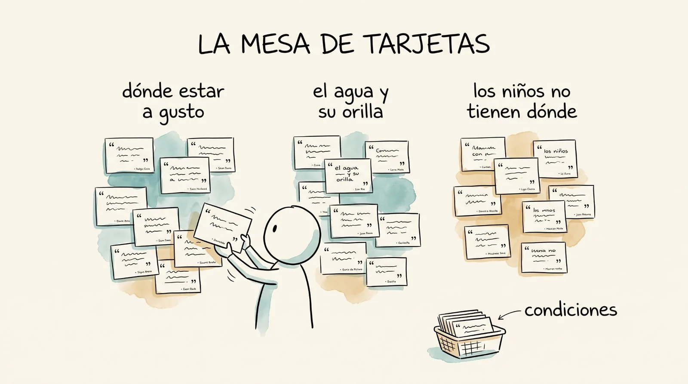
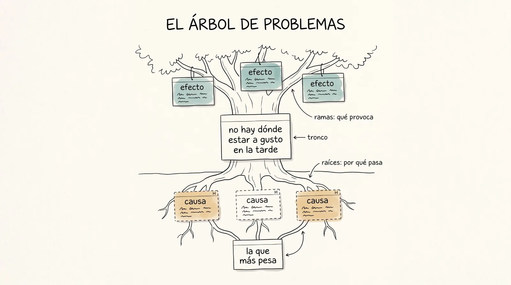
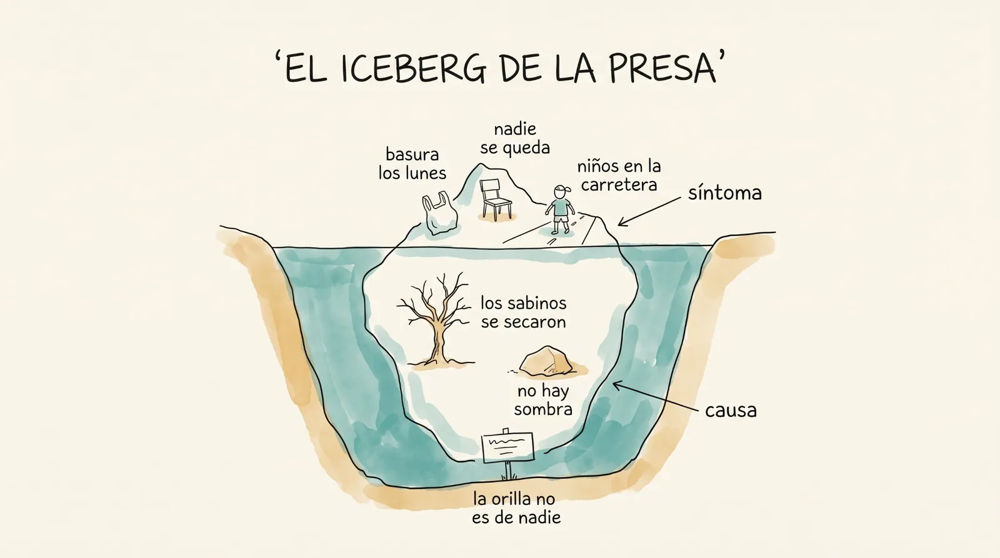
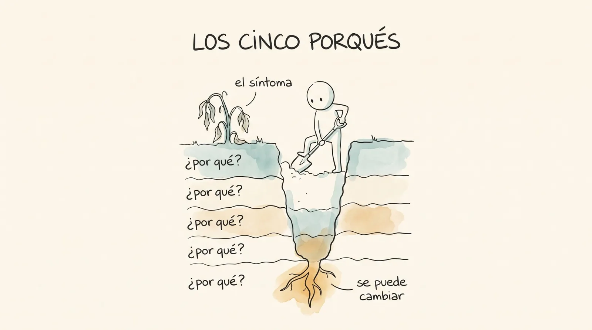
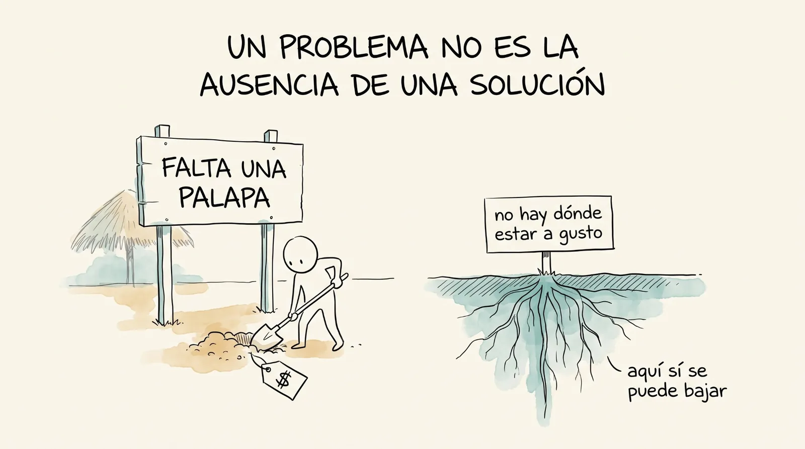
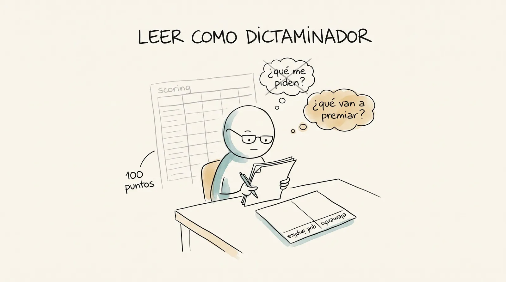

¿Cómo se reparte lo que no alcanza?
La consulta dejó libretas llenas, un mapa rayado, una respuesta incómoda o dos y, en tu teléfono, tu primer cierre. Esta semana se cierra la unidad 1 con las dos listas sobre la mesa, y todo lo que se escuchó se convierte en decisiones: el jueves se fabrican las líneas de trabajo, se arma el árbol de problemas y se forman los equipos. El viernes se acaba el misterio más viejo del curso: las reglas del fondo se entregan impresas y se destripan, y junto a ellas se abren unas reglas federales de verdad, las del PROCODES 2026, para ver el mismo oficio en grande. Arranca la unidad 2: ya escuchamos la presa, ahora diseñamos lo que pidieron.
Esta semana podrás
- Cerrar la unidad 1 en la mesa: tu suelo contra la lista del profesor, tu primer cierre comentado y las objeciones de agosto retomadas.
- Convertir un registro de campo en líneas de trabajo sin traicionar la voz de la gente.
- Saber qué es un árbol de problemas y para qué sirve, armarlo en cinco pasos y revisarlo con cinco pruebas; y armar el del grupo a partir de nuestras propias tarjetas, no del pálpito.
- Formar los equipos alrededor de las tres raíces y voltear la tuya a árbol de objetivos, con el nombre de su línea estratégica.
- Leer unas reglas de operación como dictaminador: no "qué me piden" sino "qué van a premiar".
- Explicar la mecánica completa del fondo: qué se pide, cuándo, quién decide y con qué criterios.
- Recorrer unas reglas de operación reales y completas, las del PROCODES 2026, sin perderse en sus 126 páginas.
- Decidir en quince minutos si una convocatoria vale la pena, con el semáforo, y saber qué ruta sigue una propuesta con potencial de ser elegida.
Las dos sesiones de esta semana
Cada día es un mazo de láminas (el jueves son dos: la orilla y las líneas, y luego el árbol y los equipos): en clase se proyectan una por una con el botón Presentar, y aquí se quedan, en orden, para volver a ellas cuando quieras. El mazo trae más de lo que cabe en dos horas a propósito: los minutos de cada bloque son una estimación, y el profesor elige y se brinca sobre la marcha.
De la orilla a las líneas
Cerrar la unidad 1 con las dos listas en la mesa y fabricar las líneas de trabajo con método.
1 El ticket de la semana pasada 5 min
Al aireEl ticket del viernes se contestó junto al agua. Hoy se contesta en voz alta.
Este arranque no se salta ningún jueves. Lo que quedó turbio después de la consulta suele ser lo mismo para varios: se lee textual, sin nombre, y se resuelve aquí.
Traer dos o tres respuestas: de preferencia una sobre lo que dolió de la consulta (la respuesta incómoda) y una sobre el sobre. Hoy es el día de resolverlas, porque la unidad se cierra.
2 La campana del no 10 min
Ritual · cada jueves¿Quién pidió esta semana?
Un no conseguido se anuncia, suena la campana, el grupo aplaude y el no se anota en el anti-currículum. Los síes también se cuentan. Y hoy hay una pregunta más: ¿a quién le falta su primer no? La petición real de la semana 2 es casilla del suelo y su plan B vence mañana.
Sin exhibir a nadie: preguntar en general quién trae pendiente la petición y recordar el plazo (antes del viernes de esta semana, hecha y sistematizada en el cuadernillo 1). Si el tiempo aprieta, la campana se acorta pero no se salta.
3 El cierre de la unidad 1, en la mesa 20 min
Dos listas sobre la mesa: la tuya y la del profesor.
El suelo de la unidad 1 son siete casillas y ya las marcaste en tu primer cierre o en el cuadernillo. Hoy se ponen junto a la lista del profesor, en grupo y sin nombres: qué casillas faltan más, y qué plan B tiene cada una. Contrato sin entregar: se entrega hoy. Primer no y reporte de la ficha de observación en el Drive: antes de mañana. Nada de esto es drama: es pendiente con fecha.
Proyectar solo el panel de grupo de la mesa del profesor (qué casillas faltan más, cómo les fue con el sobre, cuántos no nombraron nada que todavía no sepan hacer). Los nombres se quedan en la mesa; en el salón se habla del grupo. Quien traiga una casilla pendiente lo resuelve con el profesor al final, no al aire.
Tu primer cierre, comentado. Compartirlo es opcional; traerlo hecho, no.
Se proyecta el muro de La Florida: las frases textuales que el grupo entero se trajo de la orilla, sin nombre de quien las anotó. Y el sobre del grupo enfrentado consigo mismo: lo que la comunidad pidió varias veces y no estaba en ningún pronóstico. Ese es el punto ciego del salón, y es el mejor argumento que existe para haber consultado. Después, quien quiera lee su porqué: el número que se pondría y con qué lo sostiene.
Del muro, elegir tres frases que apunten a problemas distintos: van a reaparecer en la mesa de tarjetas dentro de una hora. La regla de los tres casos se ofrece, no se impone: quien quiera comparar lecturas lo hace en cinco minutos al final de la sesión, sin registro de ninguna de las dos.
La respuesta larga que se debía: por qué aquí no hay números, ahora que ya lo viviste un mes.
En agosto quedó una deuda: la respuesta corta fue que los puntos entrenan para juntar puntos. La larga se paga hoy, con la unidad 1 vivida. Un mes de trabajo produjo un contrato, una petición real, un reporte de observación, una consulta levantada y un pronóstico comparado con la realidad. Nada de eso llevó número y todo dejó evidencia. Las objeciones que se anotaron en la semana 0 y las que dejaste escritas al aceptar el pacto se releen ahora, una por una, con esa evidencia enfrente.
Traer la hoja de objeciones de la semana 0. Leerlas textuales y preguntar a quien la puso si sigue en pie. Las que sigan en pie se anotan otra vez: se vuelven a revisar en la semana 11, con la segunda autoevaluación.
4 La síntesis no traiciona 15 min
Tenemos ochenta frases sueltas. Necesitamos tres problemas con nombre. El camino de en medio se llama síntesis.
Sintetizar es pasar de lo que la gente dijo a decisiones que se puedan tomar, sin inventar nada en el camino. El riesgo es conocido: alguien "resume" de memoria lo que oyó en la orilla y lo que sale es su idea, no la de la gente. Por eso la síntesis se hace con método y a la vista de todos: cinco pasos, y cada paso deja rastro.
Paso 1 · La voz: lo que una persona dijo, palabra por palabra, y quién lo dijo.
La unidad mínima de la síntesis no es "la gente quiere": es esta frase, de esta persona. No se resume, no se corrige y no se traduce todavía a "quiere alberca". Las hojas de registro de las entrevistas y las hojas del taller son el único lugar de donde salen las voces; lo que no está ahí no entra al muro.
Paso 2 · La tarjeta: una petición por tarjeta, con su fuente al pie.
"La gente quiere sombra y juegos."
Dos cosas en una tarjeta, sin saber quién lo dijo ni cuántas veces. Es un resumen, y los resúmenes no se pueden pesar.
"Nos sentamos en la piedra porque no hay dónde."
mujer de 30 a 49 · entrevista 4 · pregunta 9. Una voz, una petición, una fuente. Si la misma persona pidió dos cosas, son dos tarjetas.
La fuente no lleva nombre: lleva lo que la hoja de registro ya trae (rango de edad, mujer u hombre, rumbo), el número de entrevista y el de la pregunta, o la hoja y la zona si viene del taller. Con eso, cualquier tarjeta se puede rastrear hasta su hoja, y cualquier línea puede enseñar de dónde viene.
Paso 3 · El muro: las tarjetas se juntan por el problema del que hablan, no por lo que piden.
Tres personas pidieron tres cosas distintas y las tres están diciendo lo mismo: no hay sombra donde la gente se junta. En el muro se pegan, se mueven y se vuelven a mover hasta que cada montón habla de un solo problema. La pregunta que se le hace a cada tarjeta antes de pegarla: ¿de qué problema está hablando esta persona? Mover tarjetas es barato; mover conclusiones publicadas, no.
Paso 4 · El nombre: cada montón se nombra por el problema, no por la solución.
Línea: "Palapa"
El nombre ya trae la obra. Alguien decidió sin diseñar, y la síntesis se saltó un paso: está diseñando de oídas otra vez.
Línea: "No hay dónde estar a gusto en la tarde"
El nombre deja abierta la respuesta: palapa, árboles, lona, o lo que el prototipo de la semana 6 demuestre. La consulta no dijo "palapa"; dijo esto.
La prueba es sencilla: si el nombre de la línea se puede cotizar en una ferretería, es una solución disfrazada de problema. Se reescribe hasta que sea algo que le pasa a la gente, no algo que se construye.
Paso 5 · El conteo: lo que se repitió ocho veces pesa más que lo que gritó uno. Con una excepción.
| Montón | Tarjetas | Qué se lee |
|---|---|---|
| No hay dónde estar a gusto en la tarde | 14 | Se repitió en las entrevistas y en el taller, y en tres zonas distintas: es la línea más fuerte. |
| El agua y su orilla | 9 | Fuerte, y casi toda de hombres de 50 en adelante: hay que mirar quién la dijo y quién no. |
| Los niños no tienen dónde | 4 | Pocas tarjetas, pero los niños chicos no se entrevistaron y en el taller hubo diez muchachos de secundaria. Cuatro voces de un grupo que apenas oímos valen más de lo que parece. |
El conteo protege contra el que grita más fuerte. Y el pliego de quién falta protege contra el conteo: si un grupo de la lista nombrada casi no estuvo en la consulta, su montón chico no es desinterés, es que casi no lo oímos. Se cuida aparte y se dice en voz alta cuando se decida.
5 Gimnasio 2 · De peticiones a líneas 10 min
Actividad · en parejasDiez voces de El Sabinito. Cada una a su línea, o a la canasta de las condiciones.
Con el ejercicio del gimnasio proyectado: tres líneas de trabajo y una canasta transversal. Si el reloj aprieta, las primeras cinco voces en clase y las otras cinco en casa. La prueba de la canasta: si lo que pide la voz debe cumplirse en todos los componentes a la vez (que no se cobre, que sea seguro, que alguien lo mantenga, que no dañe), no es línea: es condición, y las condiciones se heredan a todo.
Detenerse en las voces que traen la obra escondida en el nombre y en las que son condición: son las dos confusiones que van a aparecer en el muro de aquí a diez minutos. Quien trajo sus cinco frases clasificadas desde el gimnasio va a ir más rápido.
6 La mesa de tarjetas 30 min
Actividad · todo el grupo · tres rondasDiez minutos para escribir las tarjetas, doce para pegarlas y juntarlas, ocho para nombrar y contar.
Lo que hace falta en la mesa: las hojas de registro de todas las entrevistas, las diez hojas del taller con la secundaria y sus fotos, tarjetas o medias hojas, plumones gruesos, cinta, una pared libre, la foto de la presa con sus cinco zonas y el pliego de quién falta pegado al lado. Tres papeles que se reparten antes de empezar: quien lee la hoja en voz alta, quien escribe la tarjeta y quien la pega en el muro. Los papeles rotan por paquete de hojas, para que nadie sea dueño de las tarjetas de nadie.
Si alguna pareja no trajo sus hojas de registro, se trabaja con el muro de La Florida que sale de la mesa del profesor: las frases textuales del grupo, sin nombres. Cronómetro visible: las tres rondas se cortan a tiempo aunque estén buenas; lo que no cupo se termina en el gimnasio.
De dónde salen las tarjetas: de las hojas de registro de las entrevistas y de las diez hojas del taller.
| Lo que se levantó | Qué se vuelve tarjeta |
|---|---|
| Entrevistas en pareja, una hoja de registro por persona, con la foto de la presa numerada del 1 al 5 | Las respuestas 9 y 16 a 19 son peticiones: una tarjeta cada una, con la zona que la persona señaló. Las 7 y 8 (lo que gusta, a dónde llevaría a una visita) van como observación, con O. Las 10, 11, 13, 14 y 15 son lo que estorba o preocupa: tarjetas de problema. La 12 (lo que se queda tal como está) y la 11 (a dónde no dejaría ir a un niño) van a la canasta de condiciones. Las 20 y 21 (quién cuidaría, faenas) se apartan para la semana 9. |
| Taller con la secundaria, diez hojas de sistematización | La hoja 9, las ideas de la mesa: una tarjeta por idea, con su zona, quién la usaría y cuándo. La hoja 8, el no y su volteo: las tiras son problemas y van al muro; los volteos se guardan para la semana 7. La hoja 2, las rondas de puntos por zona: conteos, van como observación. La hoja 10, los saberes de la casa: se apartan para la semana 9. |
La fuente al pie de cada tarjeta se escribe con lo que la hoja de registro ya trae y sin nombre: "mujer de 50 a 64, rumbo de la escuela, entrevista 7, pregunta 16" o "taller, zona 3, idea leída". Con eso, cualquier tarjeta se rastrea hasta su hoja.
Ronda 1 · Escribir: una tarjeta por petición u observación, en las palabras de la persona, con la fuente al pie.
Cada pareja va por sus hojas de registro, pregunta por pregunta, y el equipo del taller por sus diez hojas. Quien lee dice la frase; quien escribe la pasa a la tarjeta tal cual, entre comillas, y abajo anota la fuente sin nombre ("mujer de 30 a 49, entrevista 4, pregunta 9"). Si una persona pidió dos cosas, son dos tarjetas. Las observaciones también entran (a qué hora va la gente, dónde se acomoda, los puntos del taller por zona), marcadas con una O en la esquina para distinguirlas de lo que alguien pidió. Nada se interpreta todavía: si el registro dice "que se vea cuidado", la tarjeta dice "que se vea cuidado".
Ronda 2 · Pegar y juntar: tarjeta por tarjeta, en voz alta, con una sola pregunta: ¿de qué problema habla esta persona?
Quien pega lee la tarjeta al grupo y la pone en el muro. Las primeras tarjetas abren montones; las siguientes se juntan a uno o abren otro. La regla para juntar es el problema, no el pedido: "una palapa", "una lona" y "un árbol grande" van juntas. Si el grupo duda entre dos montones, la tarjeta se pega en medio y se decide al final; si una tarjeta no cabe en ninguno, abre el suyo aunque quede sola. Se vale mover lo ya pegado cuando aparece una tarjeta que cambia la lectura: mover tarjetas es barato; mover conclusiones publicadas, no.
Aquí el profesor no pega ni decide: hace la pregunta "¿de qué problema habla?" cada vez que el grupo empiece a discutir soluciones. Vigilar que los montones no se armen por instrumento ("las del taller"), por zona de la foto ("las de la 3") ni por tipo de obra ("las de juegos"): se arman por problema. Si salen más de cinco montones, preguntar cuáles son la misma cosa.
Ronda 3 · Nombrar y contar: cada montón recibe un nombre como problema, y su número de tarjetas al lado.
| Lo que se hace | Cómo se ve en el muro |
|---|---|
| Se nombra el montón con la prueba del paso 4: si el nombre se puede cotizar, se reescribe. | Una tarjeta grande arriba de cada montón: "No hay dónde estar a gusto en la tarde". |
| Se cuentan las tarjetas, separando peticiones y observaciones. | El número junto al nombre: "14 (11 pedidos, 3 observadas)". |
| Se coteja con el pliego de quién falta: ¿de qué grupos vienen las voces de este montón? | Una marca en los montones donde hable un grupo que casi no estuvo: se cuida aparte. |
| La canasta de condiciones se lee completa en voz alta y se pega a un lado. | Una lista corta, visible, que todos los componentes van a respetar. |
Lo normal es que salgan tres líneas y una canasta. Al terminar, la foto del muro es el acta de la síntesis: va al Drive, carpeta S5, y es lo que cada línea puede enseñar cuando alguien pregunte de dónde salió.
Antes de la foto, leer los nombres de los montones en voz alta y preguntar si alguna voz del registro quedó fuera del muro. Guardar las tarjetas: el árbol se arma con ellas ahora mismo y el volteo de la semana 7 las vuelve a usar.

Del árbol de problemas a las líneas estratégicas
Qué es el árbol de problemas y cómo se arma, el de La Florida con nuestras tarjetas, y cada equipo volteando su raíz en línea estratégica.
7 ¿Qué es un árbol de problemas? 45 min
Un dibujo que ordena un problema en tres pisos: lo que lo causa abajo, el problema al centro, lo que provoca arriba.
Al tronco va el problema central: lo que le pasa a alguien, en un lugar. Abajo, las raíces: sus causas, y las causas de esas causas, que se encuentran preguntando "¿y eso por qué pasa?". Arriba, las ramas: sus efectos, que se encuentran preguntando "¿y eso qué provoca?". Viene de la metodología de marco lógico, la que usan casi todas las convocatorias de desarrollo y conservación en México.
¿Para qué sirve? Para no atacar lo primero que se ve.
| Sirve para | Porque |
|---|---|
| Separar el síntoma de la causa | Lo que la gente pide casi siempre es el síntoma o la solución que imagina. El árbol baja hasta lo que lo provoca. |
| Decidir dónde meterse | Se ve qué causas pesan más y cuáles puede mover el grupo en un semestre. |
| Repartir el trabajo | Cada raíz principal puede ser el trabajo de un equipo, y la que se queda sin equipo se ve. |
| Escribir lo que piden las convocatorias | La sección "problema" de toda solicitud es un árbol contado en prosa. En la semana 7 se voltea en árbol de objetivos, y de ahí sale el marco lógico de la semana 8. |

Cómo se lee, y la regla que en este curso no cambia.
Cada rectángulo del dibujo es una caja. En el muro, cada caja es una tarjeta: una sola idea, escrita como frase ("no hay sombra donde estar"). Las líneas entre cajas dicen qué causa qué.
Se lee de abajo hacia arriba, flecha por flecha, con un "si... entonces": "si los árboles de la orilla se perdieron, entonces no hay sombra donde estar". Si la frase suena al revés o no dice nada nuevo, la caja está mal puesta. Y la regla: cada caja enseña la tarjeta de la consulta de donde salió. La que no tiene tarjeta no se tira: va en otro color, como hipótesis del salón, hasta que alguien la confirme o la tumbe.
Cómo se arma: cinco pasos, con las mismas tarjetas del muro.
| Paso | La pregunta | Lo que queda en el muro |
|---|---|---|
| 1 · El tronco | ¿Qué problema comparten los montones? | Una tarjeta grande al centro |
| 2 · Las raíces | ¿Y eso por qué pasa?, hasta donde el registro alcance | Cada montón bajando como una raíz |
| 3 · Las ramas | ¿Y eso qué provoca? | Los efectos arriba |
| 4 · La revisión | ¿Aguanta cada caja las cinco pruebas? | Las cajas corregidas o recoloreadas |
| 5 · El reparto | ¿Qué raíz carga cada equipo, y cuál se queda sin dueño? | La foto del árbol, al Drive, carpeta S5 |
Las siguientes láminas explican cada paso. Después vienen tres ejemplos, y al final lo hacemos nosotros.
El tronco es el problema que los montones comparten, del tamaño de lo que el grupo puede mover.
Se prueba cada candidato con dos preguntas. Una: si esto se arreglara, ¿se moverían los demás montones? Dos, al revés: ¿cada montón contesta el "por qué pasa esto" del candidato? El que pasa las dos es el tronco.
| Cómo sale | Ejemplo | Qué pasa con él |
|---|---|---|
| Demasiado grande | "Hay problemas ambientales en la Sierra Gorda" | Le cabe todo y no dice a quién le pasa ni dónde. Nadie lo puede mover. |
| Obra disfrazada | "Falta un parque en la presa" | Ya trae la solución adentro. Cierra la puerta a cualquier otra. |
| Demasiado chico | "No hay dónde sentarse" | Es uno de los montones. Explica una parte y deja fuera a los demás (la basura, el agua). |
| Del tamaño justo | "La gente casi no usa la orilla de la presa para quedarse" | Dice qué le pasa a quién y dónde. Y cada montón contesta su porqué: ¿por qué no se quedan? Porque no hay dónde sentarse; porque no hay qué hacer; porque el lugar está descuidado. |
Cada montón baja como una raíz, preguntando "¿y eso por qué pasa?". Tres herramientas ayudan a bajar bien.
La cantera de las raíces ya existe: la pregunta 10 de la entrevista (por qué la gente no va, o va y no se queda) y las tiras del no de la hoja 8 del taller. Casi todas las causas están dichas ahí, con palabras de la gente.
A · ¿Hasta dónde bajo? Hasta pasar del síntoma a la causa. Atender el síntoma se siente productivo y sale caro dos veces.
Hay plaga en el chile: se reparte más insecticida. El maíz rinde la mitad: se regala fertilizante cada año. Los jóvenes se van: un curso de dos semanas.
Hay plaga: ¿por qué? Monocultivo sin rotación ni enemigos naturales. La diarrea no baja aunque el manantial está limpio: ¿por qué? El agua se recontamina en la cubeta de la casa. Se atiende eso, y cuesta centavos.
El síntoma es lo que se ve primero. El proyecto que lo ataca paga la obra y paga el problema, que vuelve. La prueba de una causa bien atendida: el gasto baja con el tiempo en vez de repetirse cada temporada.
El iceberg de la presa: lo que se ve es el síntoma; lo que lo mueve está debajo del agua.
Todo lo que la gente pidió y todo lo que el taller apuntó cabe en la punta: es lo visible. El árbol de problemas existe para bucear: cada porqué baja un metro, y la raíz que más pesa suele ser la última, la que nadie pidió en voz alta porque no se ve.

B · ¿Cómo bajo? Con los cinco porqués: a cada respuesta se le vuelve a preguntar por qué, hasta llegar a algo que se puede cambiar.
Nació en las fábricas de Toyota y se usa igual en planeación de proyectos. Se para cuando la siguiente pregunta ya no la contesta ninguna tarjeta ni ninguna observación: ahí termina la raíz, y lo que se agregue debajo va en otro color, como hipótesis.

C · ¿Cómo sé que me desvié? Cuando la caja empieza con "falta". Un problema no es la ausencia de una solución.
"Falta una palapa." "No hay reglamento municipal." "Faltan botes de basura."
Cada una ya decidió la respuesta y la escondió detrás de un "falta". No dicen qué le pasa a nadie, y cierran la puerta a cualquier otra solución.
"No hay dónde estar a gusto en la tarde." "Nadie paga los daños que causan los agroquímicos." "La basura se queda en la orilla."
Dicen qué pasa y a quién. De ahí sí se puede seguir preguntando por qué, y la respuesta puede ser una palapa, un reglamento, un bote, o algo mejor.
La prueba: si lo que sigue al "falta" o al "no hay" se puede comprar o construir, es una solución disfrazada. Se reescribe como lo que le pasa a la gente, y entonces sí se puede seguir bajando.

Arriba del tronco van los efectos: "¿y eso qué provoca?". Cuando un efecto alimenta a una de sus causas, hay un círculo vicioso.
Las ramas se suben con la misma disciplina que las raíces: cada una con su tarjeta o con su color de hipótesis. No se resuelven directamente: en la semana 7, volteadas, se vuelven los fines a los que el proyecto contribuye, y en la semana 8 de ahí salen los indicadores de resultado.
Las cinco pruebas del árbol. Se toma cada caja, una por una, y alguien le hace las cinco preguntas en voz alta.
| Prueba | La pregunta | Ejemplo con nuestras tarjetas |
|---|---|---|
| 1 · Tarjeta | ¿Esta caja puede enseñar de qué tarjeta viene? | "Los árboles de la orilla se perdieron": ninguna tarjeta lo dice. No se tira: va en otro color, como hipótesis. |
| 2 · Si... entonces | Leída de abajo arriba, ¿suena derecha? | "Si la basura se queda en la orilla, entonces el lugar está descuidado": derecha. "Si la gente no usa la orilla, entonces no hay bancas": al revés, la caja está en el piso equivocado. |
| 3 · Cotización | ¿Lo que dice la caja se puede comprar o construir? | "Faltan botes" se cotiza en la ferretería: se reescribe como "la basura se queda en la orilla". |
| 4 · Una idea | ¿La caja junta dos problemas con un "y"? | "Falta de sombra y muchas hierbas" son dos: "no hay sombra donde estar" y "el monte y las espinas cierran los caminos". |
| 5 · Tamaño y dueño | ¿El tronco cabe en lo que el grupo puede mover? ¿Alguna raíz se queda sin equipo? | Si nadie toma la raíz del agua, no se borra: se deja en el árbol y se dice que se escuchó y no se trabaja este semestre. |
El árbol terminado se fotografía, y cada raíz principal se vuelve el trabajo de un equipo.
Si dos raíces llegan al mismo fondo, esa causa honda es la que más pesa, y conviene decirlo en voz alta. Si una raíz se queda sin equipo, no se borra: se deja en el árbol y se dice que se escuchó y por qué no se trabaja este semestre. El árbol se queda pegado junto al mapa hasta la semana 7, cuando se voltea.
Un valle con plaga, tres lugares de la sierra, y La Florida con nuestras tarjetas.
Los dos primeros son casos armados para entrenar el ojo. El tercero es el nuestro: una propuesta inicial, hecha con las 45 tarjetas que salieron de la mesa, para discutirla y corregirla en el muro.
Ejemplo 1 · El valle: un problema, tres raíces, y una que se quedó sin línea.
El problema: "algunos productores usan en exceso insecticidas en el valle". Tres porqués distintos, los tres ciertos a la vez: no conocen alternativas de manejo integrado de plagas; hay mucha plaga porque se siembra en monocultivo, y eso pasa porque hay poca coordinación entre productores; el insecticida es la opción más barata porque la reglamentación no cobra sus daños. Tres raíces de naturaleza distinta: conocimiento, organización y reglas.
Abrir la parte 2 del gimnasio 4 en el proyector y bajar el árbol con el botón, nivel por nivel. Al final, la pregunta que deja: de las tres raíces, la coordinación entre productores se quedó sin línea del proyecto. Una raíz sin línea es una apuesta coja, y quien dictamina lo nota.
Ejemplo 2 · El mismo método, en otros tres lugares.
| Tronco | Tres raíces | Dos ramas |
|---|---|---|
| La milpa de las laderas da cada año menos maíz | El aguacero se lleva la tierra porque se siembra a favor de la pendiente · el rastrojo se quema o se vende y el suelo queda pelón · la semilla nativa se cruzó y ya no aguanta la seca (hipótesis) | Las familias compran maíz desde marzo · se abren parcelas nuevas en el monte, y ese efecto vuelve a la primera raíz: círculo vicioso |
| De marzo a mayo las casas de El Madroño se quedan sin agua en la llave | El manantial da menos cada seca · la manguera pierde agua y nadie la repara, porque el comité no cobra la cuota · la lluvia de los techos se va al arroyo | Las mujeres acarrean agua hasta dos horas al día · se venden animales en la seca |
| Los muchachos dejan la prepa antes de terminarla | El pasaje pesa en el gasto de la casa · a los dieciséis se les necesita en la parcela o en la obra · no ven cómo la prepa les sirve para quedarse (hipótesis) | Se van a trabajar fuera · la cooperativa no encuentra quién le lleve las cuentas |
Ningún tronco dice "falta": dicen qué le pasa a quién. Las raíces mezclan tierra, organización y dinero. Y en El Madroño la causa más barata de atender (la manguera) tiene debajo una causa que no es de tubería sino de organización.
Ejemplo 3 · Nuestras tarjetas: cinco montones y una canasta, 45 voces. Primero se nombran como problema.
| El montón, como quedó en la mesa | Tarjetas | Nombrado como problema |
|---|---|---|
| "Falta de espacio para convivencia" | 10 | No hay dónde sentarse, comer ni convivir (bancas, mesas, dónde poner la comida) |
| "Difícil acceso a la presa" | 7 | Es difícil llegar al agua y disfrutarla (el muelle "es lo más pedido", kayak, dónde pescar) |
| "Entretenimiento (no hay áreas de recreación)" | 7 | Niños y jóvenes no tienen con qué jugar ni divertirse (columpios, juegos, asadores) |
| "Falta de sombra y muchas hierbas" | 9 | Son dos problemas: no hay sombra donde estar (3) y el monte y las espinas cierran caminos y lugares (5). La novena tarjeta ("no perturbar los manantiales en la zona del Cedral") es una condición |
| "Contaminación" | 5 | La basura se queda en la orilla y en el camino (las cinco piden botes) |
| Canasta transversal | 7 | Condiciones: vigilancia cuando haya visitantes (2), que no pierda su esencia y tranquilidad, "si no le van a arreglar bien, mejor no le hagan nada". Y tres que no son condición: el sendero va con el acceso; el muro de contención y las cabañas se preguntan |
Casi las 45 tarjetas son pedidos: bancas, muelle, botes, columpios. Así habla la gente, y está bien: el árbol no corrige a nadie, traduce cada pedido al problema que lo motiva, sin inventar. Por eso los nombres de la mesa que empezaban con "falta" se reescriben, y el montón que traía dos ideas se parte en dos.
Nuestro tronco: cuatro candidatos, y las dos preguntas del paso 1.
| Candidato | Prueba | Qué se lee |
|---|---|---|
| "La presa está contaminada" | Chico y vago | Es uno de los montones, y no explica las bancas, el muelle ni los columpios. |
| "Faltan áreas recreativas en la presa" | Obra | Un "falta" con la solución adentro. |
| "No hay dónde convivir" | Una raíz | El montón más grande, pero no explica la basura, el monte ni el agua. |
| "La gente casi no usa la orilla de la presa para quedarse, convivir y divertirse" | Tronco | Cada montón contesta su porqué: no hay dónde sentarse ni sombra, no hay qué hacer ni cómo acercarse al agua, el lugar está descuidado. Varias tarjetas lo dicen de lado: "para poder ir y estar un rato", "para convivir con la familia". |
La propuesta inicial del árbol de La Florida, con nuestras tarjetas.
Seis montones, agrupados en tres raíces principales: no hay cómo quedarse a gusto, no hay qué hacer ahí, el lugar está descuidado. Lo que conviene mirar: las ramas están todas en otro color, porque la consulta casi no habló de efectos, y hay que buscarlos en la pregunta 10 y en las observaciones de agosto. Tres raíces llegan al mismo fondo, "nadie está a cargo de cuidar la orilla", que también es hipótesis: ninguna tarjeta de la mesa lo dice con esas palabras, y se confirma o se tumba con las preguntas 20 y 21. Y el círculo: el descuido ensucia, la suciedad descuida.
Es una propuesta para arrancar la discusión, no la respuesta. Enseñarla después de los dos primeros ejemplos y antes del ejercicio 3; si el grupo propone otro agrupamiento con buenas razones (por ejemplo, cinco raíces en lugar de tres), manda el grupo.
Lo que la propuesta deja fuera del árbol, a propósito.
Vigilancia cuando haya visitantes. Que el lugar no pierda su esencia y tranquilidad. "Si no le van a arreglar bien, mejor no le hagan nada." No perturbar los manantiales del Cedral. Todo componente las hereda.
El muro de contención: ¿qué problema ve quien lo pidió, un derrumbe, una orilla que se desgaja? Las cabañas: ¿para quién, y es un problema de la gente o una idea de negocio? ¿De quién es la orilla, y quién firma?
Las condiciones no son raíces: son reglas que cada componente respeta. Y lo que no se entiende no se acomoda a la fuerza: se pregunta a quien lo dijo.
Calentar el ojo: ocho tarjetas revueltas de una milpa en ladera. ¿Tronco, raíz, rama o solución disfrazada?
Con el caso 1 del gimnasio 5 en el celular. Al terminar, el botón "Ver el árbol" dibuja el árbol que formaron. Los otros dos casos quedan para la casa.
Tu raíz como pregunta, y hacia abajo hasta donde el registro alcance.
Con la parte 4 del gimnasio 4 abierta y las tarjetas del muro a la vista. La raíz se escribe como pregunta ("¿por qué no hay qué hacer en la presa ni cómo acercarse al agua?"), se proponen hasta tres causas y de cada una se baja preguntando "¿y eso por qué pasa?". La plantilla avisa cuando una celda empieza con "falta", cuenta las celdas sin tarjeta y, con "Ver mi árbol", dibuja la raíz con las hipótesis en otro color.
Rondar con dos preguntas: "¿esto es causa o es el mismo problema dicho distinto?" y "¿esto tiene tarjeta?". Es preferible una raíz corta y respaldada que una frondosa de pálpitos. Si dos tríos llegan al mismo fondo por caminos distintos, decirlo en voz alta.
La propuesta, al muro: se pasa por las cinco pruebas, se corrige, y se fotografía.
Cada trío pega su raíz debajo del tronco, en lugar de la de la propuesta, y el grupo pasa las cinco pruebas caja por caja: tarjeta, si... entonces, cotización, una idea, tamaño y dueño. Se decide en voz alta el tronco, qué hipótesis se quedan en otro color y qué raíz carga cada equipo. Foto al Drive, carpeta S5.
Un color para las tarjetas de la consulta y otro para las hipótesis, sin excepción. Para la casa quedan los gimnasios 5 (los otros dos casos) y 6, el árbol chueco.
8 Del árbol de problemas al árbol de objetivos 35 min
El árbol de objetivos es el mismo dibujo, con cada caja reescrita como la situación ya resuelta.
El problema central se vuelve el objetivo central. Cada causa se vuelve un medio: lo que tiene que pasar para llegar al objetivo. Cada efecto se vuelve un fin: lo que mejora cuando se logra. Se lee igual, de abajo arriba: si logramos este medio, entonces nos acercamos al objetivo. Es el paso que sigue en la metodología de marco lógico, y el que piden las convocatorias cuando preguntan "qué quieren lograr".
¿Y qué es una línea estratégica? Una rama del árbol de objetivos que un equipo elige trabajar.
Nadie puede con todo el árbol. Cada raíz principal, volteada, es un camino distinto para llegar al mismo objetivo central: esa rama, con sus medios, es una línea estratégica. Se le pone un nombre corto y se dice qué busca lograr. De ella sale, en la semana 7, la cadena de resultados de cada equipo, y en la semana 8, su marco lógico.
| Al voltear | Así no | Así sí |
|---|---|---|
| Se escribe la situación lograda, no la obra | "Hay bancas y un muelle" | "La gente tiene dónde sentarse y cómo acercarse al agua" |
| Se voltea lo que dice la caja, sin agregar | "La presa es el mejor parque de la sierra" | "La gente usa la orilla para quedarse y convivir" |
| Las hipótesis siguen en su color | Pasarlas en limpio como si fueran seguras | "Alguien está a cargo de cuidar la orilla" (H), hasta que se confirme |
Un ejemplo: la raíz "el lugar está descuidado", volteada.
| En el árbol de problemas | En el árbol de objetivos |
|---|---|
| La gente casi no usa la orilla de la presa para quedarse, convivir y divertirse | La gente usa la orilla de la presa para quedarse, convivir y divertirse (objetivo central, el de todos) |
| El lugar está descuidado | El lugar está cuidado |
| El monte y las espinas cierran caminos y lugares | Los caminos y los lugares están abiertos y sin espinas |
| La basura se queda en la orilla y el camino | La orilla y el camino están limpios |
| No hay dónde tirar la basura cerca | Hay dónde dejar la basura cerca, y alguien la recoge |
| Nadie está a cargo de cuidar la orilla (H) | Alguien está a cargo de cuidar la orilla (H) |
Fíjate en dos cosas. Ninguna caja dice "botes" ni "faena": esas son maneras de lograr el medio, y se deciden después, con el prototipo de la semana 6. Y el medio más hondo, "alguien está a cargo", lo comparten las tres líneas: por eso conviene que los equipos lo trabajen juntos.
Formar los tres equipos, uno por raíz.
Cada quien abre el gimnasio 3 y elige su primera y su segunda opción, con una tarjeta del muro que respalde la primera. Los nombres se pegan en el pizarrón debajo de su primera opción. Si una raíz tiene de más, se mueve quien la tenga como segunda opción, hasta que los tres equipos queden parejos. Si una raíz se queda sin nadie, no se borra: se dice en voz alta que se escuchó y no se trabaja este semestre.
Todos van a escribir, conseguir números y dar la cara: nadie se especializa. Lo único que cada equipo nombra es quién cuida que cada una de esas tres chambas no se quede sin hacer.
Voltear tu raíz y nombrar tu línea estratégica.
En el gimnasio 3, con la raíz de tu equipo elegida, aparecen sus cajas del árbol de problemas. Se reescribe cada una como situación lograda; la página avisa si se cuela una obra ("bancas", "botes", "muelle"). Al final, el nombre corto de la línea y una oración de lo que busca lograr. Luego, en el muro: las tarjetas volteadas se pegan junto a las originales, en otro color de plumón, y cada equipo lee su línea en voz alta.
Vigilar dos cosas al rondar: que el positivo no se vuelva obra, y que no se agregue nada que la caja no decía. Foto del árbol volteado al Drive, carpeta S5. En la semana 7 este árbol se revisa con lo que el prototipo contestó y de cada línea sale la cadena de resultados.
Las reglas, destripadas
Leer las reglas del fondo como dictaminador, mirarlas en el espejo de unas reglas federales reales, y decidir en quince minutos si una convocatoria vale la pena.
Hoy se leen dos documentos, y en este orden.
El primero es chico y es tuyo: de él depende el dinero del semestre. El segundo es grande y es de verdad: con él se mide si lo que aprendes a leer aquí sirve allá afuera. Los dos se leen con el mismo instrumento.
1 Las tres preguntas, al pizarrón 8 min
Al aireAntes de ver el documento: ¿qué esperas que conteste?
Cada equipo pasa sus tres preguntas al pizarrón (la última parte del gimnasio 3). Se agrupan las repetidas y se cuentan. Al final de la sesión se revisa cuáles contestó el documento, cuáles no, y qué se hace con las que no.
Casi siempre salen las tres de todo fondo que se nombraron en la semana 0 (quién decide, en qué se puede, quién comprueba) y algunas que las reglas no contestan (¿y si nos dan menos?, ¿y si llueve?). Guardar esas: son la lección del cierre.
2 Un instrumento para leer 10 min
El dictaminador no lee tu entusiasmo: lee una tabla de criterios con la pluma en la mano, y cada párrafo tuyo o le da puntos o le da flojera. Para leer desde su silla, una hoja con dos partes. Arriba, la plantilla de dos columnas: a la izquierda el elemento del documento (un monto, una fecha, un requisito, un criterio), a la derecha qué implica para nosotros. Abajo, la matriz de contexto del manual de Acción sin Daño que conociste en la semana 3, que ordena lo encontrado en cuatro casillas:
Leídas así, unas reglas de operación dejan de ser una lista de requisitos y se vuelven un mapa de dónde está el dinero, dónde está el peligro y quién tiene la pluma.

3 Las reglas del fondo, en frío 30 min
Actividad · por equipo · dos pasadasSe reparten impresas. Nadie las explica. La primera pasada es para entender; la segunda, para encontrar lo que la primera se saltó.
El documento completo, una copia por equipo y una para cada quien que la pida. En la primera pasada se llena la plantilla de dos columnas, elemento por elemento; en la segunda, la matriz. Las preguntas que salgan se anotan, no se preguntan: al final se cotejan con el pizarrón. Regla de la lectura: lo que no está escrito no está prometido, y lo que está escrito se cumple aunque nadie lo recuerde en octubre. En el mundo real la convocatoria llega en PDF y no viene con profesor.
Repartir la versión reimpresa: cambiaron la Bolsa, el tope y la cláusula de palanca respecto de la de agosto. Decirlo en una línea y no explicar nada más. Las dudas de vocabulario sí se contestan; las de interpretación, no: "¿qué dice el texto?". Que cada equipo reparta la lectura: alguien toma la sección del presupuesto, alguien la de firmas y anuencia, y después se cuentan lo que encontraron.
4 El destripado colectivo 15 min
Actividad · plenariaElemento por elemento, con la pregunta al lado: ¿qué implica para nosotros? Primero, el dinero.
| Lo que dicen las reglas | Lo que implica para nosotros |
|---|---|
| La Bolsa: $10,000 de capital semilla, para todos los componentes juntos. | No es el presupuesto del proyecto: es la contrapartida que se enseña para ir por lo que falta. Se comparte entre equipos. |
| Mínimo de $2,000 por solicitud, sin tope fijo. El dictamen reparte por orden de calificación hasta agotar la Bolsa (cláusula 5.2). | Pedir de más no se castiga con puntos: se castiga con la fila. Un proyecto calificado abajo puede llegar a la mesa cuando ya no queda nada. |
| La ministración se condiciona a contrapartida gestionada, en faenas o en monto (cláusula 5.6). | Ganar el dictamen no abre el dinero: lo abre haber conseguido algo afuera. La palanca de los diez mil deja de ser una frase. |
| La rúbrica: cien puntos en pertinencia, viabilidad técnica y ambiental, presupuesto, cronograma y capacidad, y contrapartida y gestión. | Es la lista de lo que premian. La solicitud se escribe para esa lista, sección por sección, y no para el gusto propio. |
Cotejar esta tabla contra la reimpresión antes de clase: los pesos de la rúbrica, "sin tope fijo" y el destino de los $600 del ensayo vienen de la bitácora, no del documento. Si algo no coincide, manda el documento y se corrige la lámina.
Y después, los actores y los papeles: quién decide, quién firma, quién comprueba.
| Lo que dicen las reglas | Lo que implica para nosotros |
|---|---|
| Decide un comité externo. Puede dar todo, parcial, nada, o declarar desierto. El fallo llega escrito, por rubro. | Nadie que te haya visto trabajar va a evaluar tu solicitud. El documento tiene que defenderse solo, y el fallo se responde por escrito. |
| La solicitud se entrega impresa y en mano, el viernes de la semana 10 a las 14:00, en el formato del fondo (el Anexo 1, que llega en la semana 8). | La hora es la hora, como en toda convocatoria. Hay firmas que no dependen de nosotros y se gestionan con semanas de anticipación. |
| Carta compromiso con tres firmas y anuencia de la delegación. | La anuencia no la produce el equipo: se gestiona. Un sí de palabra es el paso previo, no el papel. |
| Comprobantes: factura, o recibo simple cuando el comercio local no factura. Libro del fondo público, cada movimiento asentado a 48 horas. | Gastar y comprobar son dos verbos, y solo el segundo cuenta: lo que no tenga papel lo paga tu bolsa. |
| Ejecución en cuatro semanas, con las fechas que el documento fija. | El cronograma no se inventa: cabe o no cabe. Y en esas semanas puede llover. |
La tabla es guía, no guion: se llena con lo que los equipos encontraron, y se corrige con el documento en la mano si algo aquí no coincide con la versión impresa. Cerrar contestando en voz alta las tres preguntas de todo fondo de la semana 0: quién decide, en qué se puede, quién comprueba.
5 El espejo: unas reglas de verdad 25 min
Nuestro fondo es chico y es del curso. Afuera, los fondos se ven igual, pero en grande.
Las Reglas de Operación del PROCODES 2026: el programa de la CONANP para proyectos comunitarios en las áreas naturales protegidas, la Sierra Gorda incluida. 126 páginas del Diario Oficial, unos 167 millones de pesos al año. Nadie las lee enteras en una clase: se leen por estaciones, una por equipo, y cada equipo le cuenta al grupo lo que encontró.
Imprimir la hoja de estaciones desde la guía (una por equipo) y llevar dos o tres copias del documento con las páginas de cada estación separadas con clip. Quien quiera verlo completo, tiene el PDF en la guía. El documento se llama Reglas de Operación; los Lineamientos Internos que cita La letra chiquita son otro documento de la CONANP.
Cinco estaciones. Cada equipo toma una, lee sus páginas con lápiz y llena la hoja de estaciones.
| Estación | Dónde | Qué se busca |
|---|---|---|
| 1 · ¿Quién puede pedir? | 3.1 a 3.3.1 · pp. 8 a 10; Anexo 1 · p. 36 | Quién sí, quién no, cuántos, qué papeles. ¿Podría pedir un grupo de La Florida? ¿Y el salón? |
| 2 · ¿Cómo califican? | 3.3.2.2 y 3.3.2.3 · pp. 11 a 13 | Quién dictamina, qué pesa más, qué es obligatorio, qué pasa con quien pasa la línea y no alcanza |
| 3 · ¿Qué y cuánto? | 3.4 · pp. 16 a 18; Anexo 2 · pp. 45 a 55 | En qué concepto cabría un componente del curso y cómo se calcula su monto |
| 4 · ¿Cuándo, y qué pasa después? | 3.3.2.1, 3.3.2.4, 3.3.2.5, 4.1 a 4.5 · pp. 10 a 24 | Qué plazos matan una solicitud; qué se firma y se comprueba si se gana |
| 5 · El papel que se llena | Anexo 3 · pp. 56 a 64; Anexo 6 "A" · pp. 79 a 81 | Qué campos piden argumento y qué pieza del curso cae en cada uno |
Los documentos: la guía de lectura, con el mapa de las 126 páginas y la hoja de estaciones para imprimir, y el PDF completo. Las veinticinco preguntas de la cacería en las reglas están ordenadas por las mismas estaciones.
Si hay más de cinco equipos, dos toman la estación 2: es la que más conversación da. Al contar, cada equipo dice un dato, lo que implica y una pregunta que el documento no contesta. Cortar a los dos minutos.
Puestos lado a lado, los dos documentos se parecen más de lo que parece.
| Nuestro fondo | PROCODES 2026 | |
|---|---|---|
| Quién decide | Un comité externo; fallo escrito, por rubro | Un Comité Técnico por área protegida; si no te notifican en 10 días hábiles, es no |
| Qué premia | Una rúbrica de 100 puntos en cinco rubros | Una tabla de 52 puntos en doce criterios, dos de ellos obligatorios |
| Cómo reparte | Por orden de calificación hasta agotar la Bolsa | Por orden de puntaje hasta agotar lo del área; mínimo 20 puntos |
| Qué pone quien pide | Contrapartida gestionada, que abre la ministración | 20% en proyectos productivos, en jornales, especie o dinero |
| Cómo se comprueba | Factura o recibo simple; libro público a 48 horas | Facturas verificadas en el SAT, recibos comunitarios, listas de jornales; se guardan cinco años |
| Cuánto dura | Cuatro semanas de ejecución | Hasta el 31 de diciembre, sin excepción |
Lo que el curso te hace vivir en chico (la fila, la contrapartida que abre el dinero, el comprobante que manda) es exactamente lo que el programa federal hace en grande. La diferencia más importante está en la primera estación: el PROCODES no se lo da al que sabe escribir proyectos, sino a la gente que vive y usa el lugar. Ni el salón ni la UAQ pueden pedir; un grupo de La Florida, quizá sí.
6 El semáforo: ¿vale la pena aplicar? 15 min
Leer bien no basta: hay que decidir, y rápido. El semáforo es una rúbrica de quince minutos que dice si una convocatoria, en esta edición, es para este grupo.
Un "no" en un filtro apaga la convocatoria para esta edición. Un "no sé" no la apaga, pero la detiene: se vuelve una pregunta con nombre y fecha. El orden es elegibilidad primero, proyecto después, calendario al final.
¿Le conviene a un grupo de La Florida pedirle al PROCODES del año que entra? Filtro por filtro, en voz alta.
Con el semáforo abierto en el proyector y lo que las cinco estaciones encontraron. Se contesta en grupo, filtro por filtro y criterio por criterio, y se discute cada "no sé" hasta volverlo una pregunta con dueño. Al final, el color, la razón en una línea, y lo que tendría que pasar para que cambie.
El semáforo trae un ejemplo precargado; no enseñarlo hasta que el grupo tenga su propio color. Lo más probable es ámbar: el proyecto cabe (centro de cultura ambiental, restauración o ecoturismo, sin deformar el espacio comunitario) y hay tiempo, pero no se sabe si existe un grupo de al menos cinco habitantes dispuesto a pedir, ni de quién es la orilla, que es justo la hipótesis del fondo del árbol. Que se note el hilo: la pregunta que el árbol dejó abierta el jueves es la misma que el semáforo no deja pasar hoy.
7 La ruta, de aquí a la semana 10 5 min
Una propuesta con potencial de ser elegida no se escribe: se prepara, y la escritura es la penúltima parte.
| Semana | Estación de la ruta | La prueba para pasar |
|---|---|---|
| 4 y 5 | Problema con dueño · semáforo · leer como dictaminador | El problema en una oración, con evidencia; el color decidido; la tabla de criterios con el puntaje esperado |
| 6 y 7 | La lógica, antes que la prosa | El objetivo se señala en el árbol volteado |
| 8 y 9 | Ir a ver a quien decide · el grupo y sus papeles lentos | Las prioridades de quien decide, anotadas; los papeles lentos en camino |
| 10 | El concepto y el número · escribir para el que lee · entregar como se debe | La memoria de cálculo que suma; el acuse con fecha y hora |
| 11 | El pre-dictamen y después del fallo | La respuesta escrita al fallo, sea cual sea |
La ruta completa, con sus once estaciones, las ocho señales de una propuesta con potencial y el calendario hacia atrás, está en la ruta de la propuesta. Sirve para la solicitud al fondo y para cualquier convocatoria después.
8 Las preguntas del pizarrón, revisadas 7 min
¿Cuáles contestó el documento? ¿Y las que no?
Se tachan las contestadas con la página al lado. Las que el documento no contesta tienen dos destinos: o son cosas que las reglas no van a decir nunca (qué pasa si llueve: eso lo resuelve tu cronograma) o son cosas que alguien sí sabe y hay que ir a preguntarle. Pedir el dato a quien lo tiene es gestión, y es exactamente el oficio que este curso enseña.
9 Cierre y ticket 5 min
Las reglas van al expediente. El equipo, con nombre, va a la bitácora.
El ticket desde el celular, noventa segundos. Este fin de semana: el árbol de objetivos de tu equipo y su línea estratégica en la bitácora (el gimnasio 3 los copia); La letra chiquita y la cacería de tu estación terminada; y la página de la semana 6 leída, porque el viernes que viene se vuelve a La Florida y hay una promesa que cumplir.
Herramientas de la semana
Las dos listas en la mesa
La unidad 1 se cierra el jueves con tu suelo junto a la lista del profesor y tu primer cierre comentado. Nada se recoge y nada produce número: se revisa qué casillas faltan más en el grupo y qué plan B tiene cada una, se proyecta el muro de frases textuales que todos se trajeron de la orilla, y se paga la respuesta larga que se debía desde agosto sobre por qué aquí no hay números. Las objeciones que dejaste escritas en el pacto se releen con la unidad vivida. Si quieres practicar la regla de los tres casos, se hace en cinco minutos al final, sin registro.
La síntesis no traiciona
Pasar de ochenta frases a tres líneas de trabajo es una fabricación, y las fabricaciones se controlan con método: cada petición a una tarjeta con su fuente, las tarjetas se agrupan por afinidad en el muro, y cada grupo se nombra por el problema, no por la solución. La consulta no dijo "palapa": dijo "no hay dónde estar a gusto en la tarde". Si la línea ya trae la obra en el nombre, la síntesis se saltó un paso y alguien está diseñando de oídas otra vez. El conteo protege: lo que se repitió ocho veces pesa más que lo que gritó uno. Y las voces que el pliego de quién falta marcó como pocas se cuidan aparte: su conteo bajo no es desinterés, es que casi no las oímos.
El árbol de problemas en cinco pasos y cinco pruebas
Qué es. Un dibujo que ordena un problema: el problema central al tronco, sus causas abajo, sus efectos arriba. Sirve para no atacar lo primero que se ve, decidir dónde meterse, repartir el trabajo y escribir la sección "problema" de cualquier solicitud.
Los pasos. 1, el tronco: el problema que los montones comparten, probado con dos preguntas (¿si se arreglara, se moverían los demás?, ¿cada montón contesta su porqué?). 2, las raíces: cada línea baja como raíz preguntando "¿y eso por qué pasa?" hasta donde el registro alcance. 3, las ramas: "¿y eso qué provoca?", con los círculos viciosos marcados. 4, la revisión con las cinco pruebas. 5, el reparto: la foto, con cada raíz y su dueño.
Las pruebas. Tarjeta (cada caja enseña su fuente o va en otro color), si... entonces (cada flecha leída de abajo arriba suena derecha), cotización (nada que se pueda comprar), una idea por caja, y tamaño y dueño (el tronco cabe en lo que el grupo puede mover; ninguna raíz desaparece).
Para entrenar: los cinco porqués (gimnasio 4), ¿tronco, raíz o rama? (gimnasio 5) y el árbol chueco (gimnasio 6). Y este video corto que recomienda el profesor explica la trampa del "falta" en cinco minutos. El árbol se queda pegado junto al mapa; en la semana 7 se voltea, y del volteo sale la estrategia de cada componente.
Una raíz, una línea estratégica
Cada equipo carga una raíz del árbol de problemas. Al voltearla, cada caja se reescribe como la situación ya resuelta (el problema se vuelve objetivo, las causas se vuelven medios) y esa rama del árbol de objetivos es la línea estratégica del equipo: un nombre corto y una oración de lo que busca lograr. Todos escriben, consiguen números y dan la cara; el equipo solo nombra quién cuida que ninguna de esas chambas se quede sin hacer. El gimnasio 3 te lleva paso a paso.
Las reglas, las de verdad y lo que se hace con ellas
- Las reglas del fondo y la plantilla de dos columnas: impresas el viernes, van a tu expediente.
- Las reglas del PROCODES 2026, por dentro: el mapa de las 126 páginas, la tabla de 52 puntos completa, los conceptos que caben en la Sierra Gorda, la letra chiquita y la hoja de estaciones para imprimir. Trae su propia presentación de once láminas.
- El PDF completo de las reglas, copia de la publicada por la CONANP.
- El semáforo de convocatorias: la rúbrica para decidir en quince minutos si vale la pena aplicar. Se llena en línea y se copia a la bitácora.
- La ruta de la propuesta: once estaciones, cada una con su prueba de salida, de la consulta al fallo.
Las reglas, por fin
Un mes preguntando y un mes de "semana 5". Ya llegamos. El viernes recibes el documento impreso, completo, y nadie te lo va a explicar: se lee en frío, con la plantilla enfrente, porque descubrir lo que dice (y lo que no dice) es exactamente el entrenamiento. Aquí no te adelantamos ni una cláusula. Trae al viernes las tres preguntas que esperas que las reglas respondan: el gimnasio 3 te las guarda y van al pizarrón antes de que el documento toque la mesa.
El gimnasio
Hoja de consulta
- Síntesis
- El paso de los datos crudos a las decisiones, hecho con método y a la vista de todos. Se sintetiza sobre el registro (frases, conteos, mapa), nunca sobre el recuerdo. Toda línea de trabajo debe poder mostrar sus tarjetas: de qué voces viene.
- Línea de trabajo
- Un problema que la consulta volvió ineludible, nombrado como problema: "no hay dónde sentarse, comer ni convivir", "es difícil llegar al agua y disfrutarla", "la basura se queda en la orilla". En el árbol, cada línea baja como una raíz del tronco, y de cada una saldrá un componente con su equipo.
- Condición transversal
- Lo que la consulta pidió para todo a la vez: que sea seguro, que no se cobre, que alguien lo mantenga, que no dañe. No es una línea con obra propia: es una regla que cada componente hereda. En la mesa de tarjetas va a su propia canasta.
- Árbol de problemas
- El problema central al tronco, sus causas a las raíces, sus efectos a las ramas. Se baja preguntando "¿por qué pasa?" y se sube preguntando "¿qué provoca?". Se arma con las tarjetas de la consulta, para que cada caja pueda enseñar su fuente, y se revisa con cinco pruebas. En la semana 7 se voltea y se convierte en árbol de objetivos.
- Caja
- Cada rectángulo del árbol. En el muro es una tarjeta: una sola idea, escrita como frase. Las líneas entre cajas dicen qué causa qué.
- Árbol de objetivos
- El árbol de problemas volteado: cada caja reescrita como la situación ya resuelta. El problema central se vuelve objetivo central, las causas se vuelven medios y los efectos, fines. Se escribe lo que se logra, no la obra.
- Línea estratégica
- Una rama del árbol de objetivos que un equipo elige trabajar: la raíz volteada, con un nombre corto y una oración de lo que busca lograr. De ella sale la cadena de resultados de la semana 7.
- Tronco
- El problema central: el que los demás montones explican. Se elige con dos preguntas (si se arreglara, ¿se moverían los demás?; ¿cada montón contesta su porqué?) y se escribe del tamaño de lo que el grupo puede mover: ni tan grande que quepa todo el estado, ni tan chico que sea una sola tarjeta.
- Síntoma y causa
- El síntoma es lo que se ve primero (la plaga, la basura del lunes, los niños en la carretera); la causa es lo que, si cambiara, lo movería. Atender el síntoma se siente productivo y sale caro dos veces: se paga la obra y se paga el problema, que vuelve. La prueba de una causa bien atendida: el gasto baja con el tiempo en lugar de repetirse.
- Los cinco porqués
- Técnica de preguntas que explora las relaciones de causa y efecto detrás de un problema: a cada respuesta se le vuelve a preguntar por qué, unas cinco veces, hasta llegar a algo que se puede cambiar. Nació en las fábricas de Toyota. En este curso lleva una regla más: cada porqué enseña su tarjeta de la consulta o se marca como hipótesis del salón.
- Ausencia de solución
- La trampa de escribir la solución con un "falta" adelante: "falta una palapa", "no hay reglamento", "faltan botes". Ya decidió la respuesta y no dice qué le pasa a nadie. Se reescribe como problema (lo que pasa y a quién) para que la respuesta quede abierta y el árbol pueda seguir bajando.
- Círculo vicioso
- Cuando un efecto alimenta a una de sus propias causas: el lugar abandonado se llena de basura, y la basura aleja a la gente. En el árbol se dibuja con una flecha que regresa de arriba abajo. Cortarlo en un punto mueve todo lo demás.
- Prueba del si... entonces
- Leer cada flecha del árbol de abajo arriba: "si los árboles de la orilla se perdieron, entonces no hay sombra". Si suena al revés, la caja está en el nivel equivocado; si no dice nada nuevo, repite el problema con otras palabras. Es la misma lógica de la cadena de resultados de la semana 7.
- Componente
- La pieza del centro recreativo que un equipo diseña y ejecuta: la respuesta concreta a una raíz. Los componentes de los equipos son hermanos y rivales a la vez: se complementan en la orilla y compiten por el mismo fondo.
- Mesa de tarjetas
- El método de agrupación: una petición u observación por tarjeta, con su fuente ("mujer de 50 a 64, entrevista 7, pregunta 16"), agrupadas por afinidad en el muro hasta que los grupos se nombran solos. Mover tarjetas es barato; mover conclusiones publicadas, no.
- Evidencia de consulta
- Lo que respalda una línea o una decisión: número de menciones, frases textuales, marcas del mapa. "A mí me late" no es evidencia; "lo dijeron seis personas y el mapa lo confirma" sí.
- Reglas de operación, convocatoria y lineamientos
- Tres documentos distintos. Las reglas de operación dicen quién puede pedir, cuánto, cómo, cuándo y con qué obligaciones; la convocatoria avisa que la ventanilla abre, con fechas y oficinas; los lineamientos internos detallan cómo opera la dependencia. Las reglas se leen completas, con lápiz, dos veces: la primera para entender, la segunda para encontrar lo que la primera se saltó.
- Leer como dictaminador
- Leer la convocatoria desde la silla del que decide: convertir los criterios de evaluación en una lista de "esto es lo que premian" y escribir la solicitud para esa lista. El dictaminador no conoce tu esfuerzo: conoce tu documento.
- Matriz de contexto
- Cuatro casillas para leer cualquier situación, tomadas del manual de Acción sin Daño: hechos (lo que es), oportunidades (lo que se puede aprovechar), riesgos (lo que puede tumbarte) y actores (quién tiene la pluma). Aplicada a unas reglas de operación, convierte el trámite en mapa.
- Rúbrica o tabla de criterios
- La tabla con la que el comité califica. La del fondo del curso reparte cien puntos en pertinencia, viabilidad técnica y ambiental, presupuesto, cronograma y capacidad, y contrapartida y gestión; la del PROCODES reparte 52 en doce criterios. Es pública, y por eso la solicitud se escribe para ella.
- Criterio obligatorio
- El que hay que cumplir aunque se tengan puntos de sobra en los demás. En el PROCODES, contribuir a la planeación estratégica del área protegida y a su decreto o Programa de Manejo (criterios 2 y 3): sin ellos no se autoriza, aunque la solicitud sume cuarenta.
- Concepto de apoyo y costo unitario
- La categoría en la que un programa mete su dinero (un vivero, un apiario, un curso) y lo máximo que paga por cada unidad (el metro cuadrado, la colmena, el evento). El monto que se pide es la meta en unidades por el costo unitario, dentro de un mínimo y un máximo.
- Prevención
- El aviso de que a una solicitud le falta algo, con un plazo corto para corregir. En el PROCODES llega a más tardar 3 días hábiles después de entregar y da 5 para corregir; lo que no llega en ese plazo tira la solicitud.
- Papeles lentos
- Los que no dependen de quien pide y tardan: el documento del predio, la anuencia del dueño o de la asamblea, los permisos ambientales, el acta de un comité. Se empiezan antes de la convocatoria, no después de ganar.
- Semáforo de convocatorias
- La rúbrica rápida para decidir si una convocatoria vale la pena: cinco filtros de sí o no, siete criterios de ajuste de 0 a 2, y un color con su razón. El orden es elegibilidad primero, proyecto después, calendario al final.
- Contrapartida
- Lo que el solicitante pone de su lado: trabajo, materiales, gestiones, dinero propio. En las convocatorias reales la contrapartida habla por ti: dice "esto no se cae si ustedes se van". Se declara y se cuantifica, no se presume. En este fondo, además, abre la ministración: sin contrapartida gestionada, el dinero no sale.
- Monto solicitado y monto otorgado
- Dos números distintos, y la diferencia educa: en el mundo real pides lo que justificas y te dan lo que el dictamen decide, que puede ser todo, menos o nada. Por eso el presupuesto se arma para defenderse solo.
Lo que produjimos
Esta vitrina se llena al cierre de la semana. Lo que va a llegar aquí:
- La foto del muro con las líneas de trabajo y sus tarjetas de evidencia.
- El árbol de problemas del grupo, corregido en el muro a partir de la propuesta inicial, con las hipótesis marcadas y los círculos viciosos a la vista.
- Los tres equipos con su raíz y el árbol de objetivos con sus líneas estratégicas.
- La tabla colectiva del destripado de las reglas y las preguntas que el documento no contestó.
- El espejo del PROCODES 2026 por estaciones y el color que el grupo le puso en el semáforo.
Aviéntate 🌊
Cuentas claras, amistades largas, dice el refrán. Por eso las reglas se escriben antes de que el dinero se mueva: no son el estorbo del proyecto, son el proyecto diciendo cómo quiere ser tratado.
El viernes conoces las cuentas. Las amistades se van a poner a prueba solas.
Esta semana todavía no abre.
Se abre cuando el grupo llegue aquí, no en una fecha: si vamos adelantados se adelanta, y si algo nos retrasa espera. Mientras tanto puedes entrar a todo el gimnasio, a la Semana 0, a Tu calificación y a tu expediente, que están siempre abiertos.